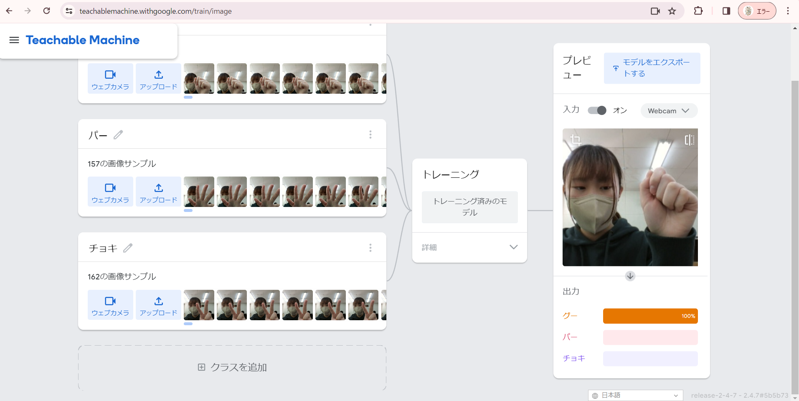
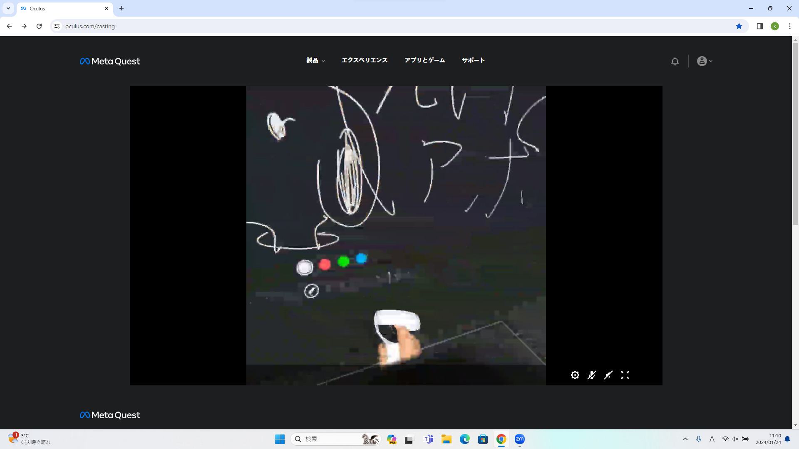

第2週目
2-1 １週目のレポートをHTMLで作る
１週目のレポート
1.内容
1週目の授業で行った、サイエンスアート、ゲームの作成、ホームページの作成についての感想を書いた。
2.感想
レポートなのにwordを使わないことに対する違和感があった。
2-2 機械学習体験

1.内容
Teachable Machineでグー、チョキ、パーの3種類の画像を撮影し、判別する機械プログラムを作成して実証する。
2.感想
グーとパーの判別は正しくされやすかったが、グーとチョキ、チョキとパーは判別が正しくされにくく難しかった。
2-3 VR（バーチャルリアリティー：Virtual Reality）会議室の体験

1.内容
情報技術で作られた仮想空間にある仮想会議室に遠隔地からのユーザーを参加させるメタバース体験を Workrooms というアプリケーションで行う。
2.感想
現実空間での動きが仮想空間にも同じように反映されていてすごいと思った。